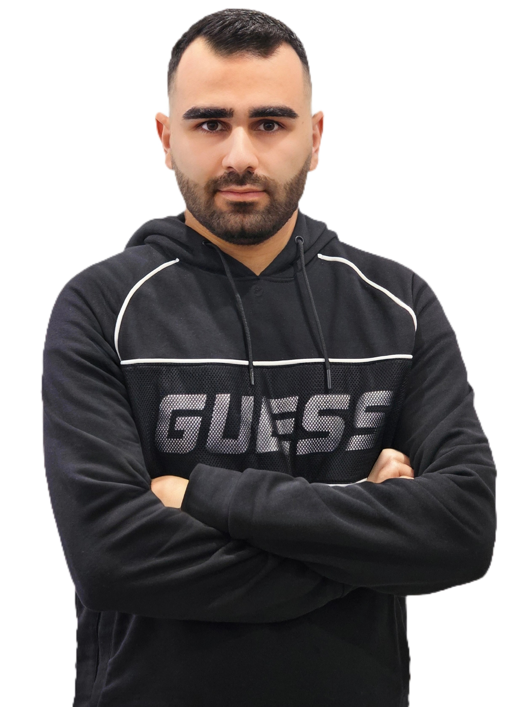

Skilled Communicator | Thrives in Collaborative Environments
I am a results-driven professional with a passion for effective communication and a versatile skill set spanning language, education, and technology. Fluent in five languages, I have worked with the intricacies of language to simplify complex concepts and foster connections that elevate teamwork. Over the years, I have developed a deep understanding of cross-cultural communication, enabling me to engage diverse audiences effectively.
Driven by an intrinsic passion for technology, I have pivoted towards the tech industry. I’ve pursued relevant certifications, including a C++ Essentials certification, and am continually expanding my expertise in emerging fields like front-end and back-end development, artificial intelligence, machine learning, networking, DevOps, cloud computing, React, Node.js, and ultimately ethical hacking. I am relentlessly pursuing advanced certifications and hands-on experience in these areas with the goal of mastering these dynamic fields and contributing to cutting-edge innovations.
With a Bachelor’s degree in English Literature, I bring a meticulous and analytical mindset to problem-solving, consistently applying my communication expertise to drive clarity and efficiency in every project I undertake. I thrive in fast-paced, high-stakes environments, constantly adapting to new challenges and leveraging my diverse background to bring innovative solutions. I am committed to continuous growth and remain at the forefront of technological advancement, always striving to expand my skill set.
Outside of my professional endeavors, I am an avid reader of self-development literature and a passionate music enthusiast, enjoying both the piano and guitar. My personal pursuits fuel my ambition, and I embrace every opportunity to learn, grow, and push the boundaries of what I can achieve.
Commonwealth Casualty Insurance Company | January 2023 – August 2024
Grtasiradz High School | 2021 – 2022
Freelance | 2019 – 2022
Freelance | 2020 (6 months)
Bachelor’s Degree in English Literature - Faculty of Arts and Human Sciences | 2018 – 2022
Studied in French Linguistics - Faculty of Arts and Human Sciences | 2020 – 2022
LinkedIn: Moses Hindoyan